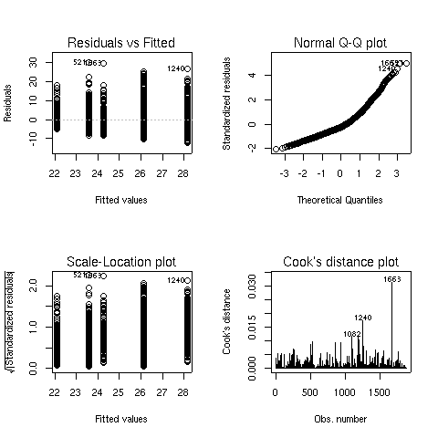
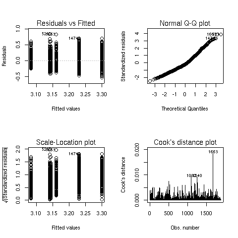
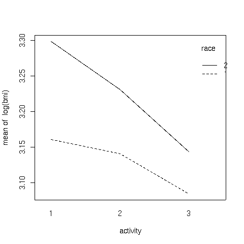
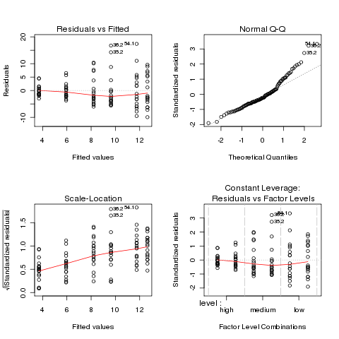
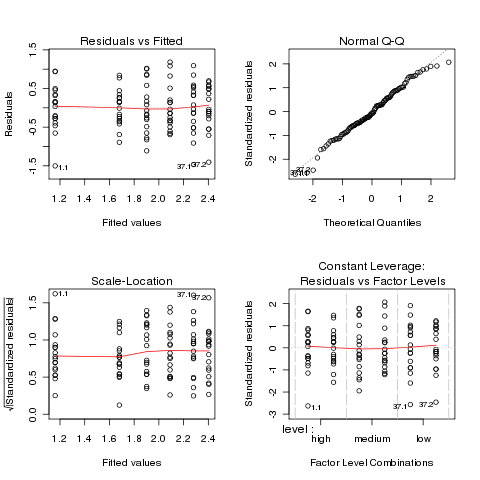
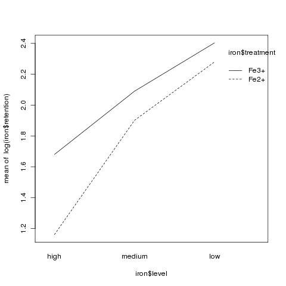

Analysis of Variance
1 Two-Way ANOVA
To express the idea of an interaction in the R modeling language, we need to
introduce two new operators. The colon (:) is used to indicate an
interaction between two or more variables in model formula. The asterisk
(*) is use to indicate all main effects and interactions among the
variables that it joins. So, for example the term A*B would expand
to the three terms A, B, and A:B. As an example
of a two-way ANOVA, consider a study to determine the effects of physical
activity on obesity. Subjects were rated for their physical activity on a
three point scale with 1=not very active, 2=somewhat active, and 3=very active.
In addition, the race (either 1 or 2) of the participant was recorded, along
with their Body Mass Index (BMI). We want
to answer the
following three questions:
- Were the means for BMI the same for the two races?
-
Were the means for BMI the same for the three activity levels?
-
Is the effect of activity level different depending on race?, or
equivalently Is the effect of race different depending on activity level?
The first two questions can be answered by looking at the race and
activity main effects, while the third question describes the
race by activity interaction. The data can be found at
http://www.stat.berkeley.edu/classes/s133/data/activity.csv. Here are the R statements to run
the ANOVA:
> activity = read.csv('activity.csv')
> activity$race = factor(activity$race)
> activity$activity = factor(activity$activity)
> activity.aov = aov(bmi~race*activity,data=activity)
> summary(activity.aov)
Df Sum Sq Mean Sq F value Pr(>F)
race 1 3552 3552 102.5894 < 2e-16 ***
activity 2 2672 1336 38.5803 < 2e-16 ***
race:activity 2 301 151 4.3508 0.01303 *
Residuals 1865 64574 35
---
Signif. codes: 0 '***' 0.001 '**' 0.01 '*' 0.05 '.' 0.1 ' ' 1
Notice that there are two degrees of freedom for activity - this means
two parameters will be estimated in order to explain activity's effect on
bmi. Unlike linear regression, where only a single parameter is
estimated, and the only relationship that can be fit is a linear one, using two
parameters (to account for the three levels of activity) provides more flexibility
than would be possible with linear regression.
To see if the analysis was reasonable, we can look at the default plots:
> plot(activity.aov)
The graphs appear below:

There seems to some deviation from normality when looking at
the Normal Q-Q plot (recall that, if the residuals did follow a normal
distribution, we would see a straight line.) When this situation arises,
analyzing the logarithm of the dependent variable often helps. Here are the
same results for the analysis of log(bmi):
> activity1.aov = aov(log(bmi)~race*activity,data=activity)
> summary(activity1.aov)
Df Sum Sq Mean Sq F value Pr(>F)
race 1 4.588 4.588 100.3741 < 2.2e-16 ***
activity 2 3.251 1.625 35.5596 6.98e-16 ***
race:activity 2 0.317 0.158 3.4625 0.03155 *
Residuals 1865 85.240 0.046
---
Signif. codes: 0 '***' 0.001 '**' 0.01 '*' 0.05 '.' 0.1 ' ' 1
> plot(activity1.aov)

The Q-Q plot looks better, so this model is probably more appropriate.
We can see both main effects as well as the interaction are significant.
To see what's happening with the main effects, we can use aggregate:
> aggregate(log(activity$bmi),activity['race'],mean)
race x
1 1 3.122940
2 2 3.222024
> aggregate(log(activity$bmi),activity['activity'],mean)
activity x
1 1 3.242682
2 2 3.189810
3 3 3.109518
Race 2 has higher values of BMI than race 1, and BMI decreases as the
level of activity increases.
To study the interaction, we could use aggregate, passing both race
and activity as the second argument:
> aggregate(log(activity$bmi),activity[c('race','activity')],mean)
race activity x
1 1 1 3.161119
2 2 1 3.298576
3 1 2 3.140970
4 2 2 3.230651
5 1 3 3.084426
6 2 3 3.143478
The arrangement of the output from tapply may be more helpful:
> tapply(log(activity$bmi),activity[c('race','activity')],mean)
activity
race 1 2 3
1 3.161119 3.140970 3.084426
2 3.298576 3.230651 3.143478
It's usually difficult to judge relationships like this from a table.
One useful tool in this case is
an interaction plot. An interaction plot has one point
for each combination of the factors defined by an interaction. The x-axis
represents the levels of one of the factors, and the y-axis represents the
mean of the dependent variable, and a separate line is drawn for each
level of the factor not represented on the x-axis. While it wouldn't be
too hard to produce such a plot with basic commands in R, the process is
automated by the interaction.plot function. The first argument to
this function is the factor to appear on the x-axis; the second is the
factor which will define the multiple lines being drawn, and the third
argument is the dependent variable. By default, interaction.plot
uses the mean for its display, but you can provide a function of your own
choosing through the fun= argument.
For the activity data, we can produce an interaction plot with the following
code:
> with(activity,interaction.plot(activity,race,log(bmi)))
Here's the plot:

It can be seen that the interaction is due to the fact that the slope of
the line for race 2 is steeper than the line for race 1.
2 Another Example
This example has to do with iron retention in mice. Two different treatments,
each at three different levels, were fed to mice. The treatments were
tagged with radioactive iron, so that the percentage of iron retained could
be measured after a fixed period of time.
The data is presented in a table as follows:
----------------------------------------------------
Fe2+ Fe3+
----------------------------------------------------
high medium low high medium low
----------------------------------------------------
0.71 2.20 2.25 2.20 4.04 2.71
1.66 2.93 3.93 2.69 4.16 5.43
2.01 3.08 5.08 3.54 4.42 6.38
2.16 3.49 5.82 3.75 4.93 6.38
2.42 4.11 5.84 3.83 5.49 8.32
2.42 4.95 6.89 4.08 5.77 9.04
2.56 5.16 8.50 4.27 5.86 9.56
2.60 5.54 8.56 4.53 6.28 10.01
3.31 5.68 9.44 5.32 6.97 10.08
3.64 6.25 10.52 6.18 7.06 10.62
3.74 7.25 13.46 6.22 7.78 13.80
3.74 7.90 13.57 6.33 9.23 15.99
4.39 8.85 14.76 6.97 9.34 17.90
4.50 11.96 16.41 6.97 9.91 18.25
5.07 15.54 16.96 7.52 13.46 19.32
5.26 15.89 17.56 8.36 18.40 19.87
8.15 18.30 22.82 11.65 23.89 21.60
8.24 18.59 29.13 12.45 26.39 22.25
----------------------------------------------------
Thus, before we can perform analysis on the data, it needs
to be rearranged. To do this, we can use the reshape
function. Since there are two different sets of variables
that represent the change in the factors of the experiment,
we first read in the data (skipping the header), and create
two groups of variables in our call to reshape:
> iron0 = read.table('iron.txt',skip=5,nrows=18)
> names(iron0) = c('Fe2high','Fe2medium','Fe2low','Fe3high','Fe3medium','Fe3low')
> iron1 = reshape(iron0,varying=list(1:3,4:6),direction='long')
> head(iron1)
time Fe2high Fe3high id
1.1 1 0.71 2.20 1
2.1 1 1.66 2.69 2
3.1 1 2.01 3.54 3
4.1 1 2.16 3.75 4
5.1 1 2.42 3.83 5
6.1 1 2.42 4.08 6
After examining the data, it can be seen that the low, medium, and
high values have been translated into values 1, 2, and 3 in the
variable time. The id variable is created to help us see
which line each observation came from, which is not relevant in this
case, since the table was just used to present the data, and the
values in the table don't represent repeated measures on the same
experimental unit.
Next, we eliminate the id column, rename the column named
"time" and further reshape the
data to represent the two treatments:
> iron1$id = NULL
> names(iron1)[1] = 'level'
> iron = reshape(iron1,varying=list(2:3),direction='long')
> head(iron)
level time Fe2high id
1.1 1 1 0.71 1
2.1 1 1 1.66 2
3.1 1 1 2.01 3
4.1 1 1 2.16 4
5.1 1 1 2.42 5
6.1 1 1 2.42 6
All that's left is to remove the id
column and to rename time and Fe2high:
> iron$id = NULL
> names(iron)[2:3] = c('treatment','retention')
> head(iron)
level treatment retention
1.1 1 1 0.71
2.1 1 1 1.66
3.1 1 1 2.01
4.1 1 1 2.16
5.1 1 1 2.42
6.1 1 1 2.42
Once the data has been reshaped, it's essential to
make sure that the independent variables are correctly stored
as factors:
> sapply(iron,class)
level treatment retention
"integer" "integer" "numeric"
Since treatment and level are not factors,
we must convert them:
> iron$treatment = factor(iron$treatment,labels=c('Fe2+','Fe3+'))
> iron$level = factor(iron$level,labels=c('high','medium','low'))
> head(iron)
level treatment retention
1.1 high Fe2+ 0.71
2.1 high Fe2+ 1.66
3.1 high Fe2+ 2.01
4.1 high Fe2+ 2.16
5.1 high Fe2+ 2.42
6.1 high Fe2+ 2.42
Now we can perform the ANOVA:
> iron.aov = aov(retention ~ level*treatment,data=iron)
> summary(iron.aov)
Df Sum Sq Mean Sq F value Pr(>F)
level 2 983.62 491.81 17.0732 4.021e-07 ***
treatment 1 62.26 62.26 2.1613 0.1446
level:treatment 2 8.29 4.15 0.1439 0.8661
Residuals 102 2938.20 28.81
Before proceeding further, we should examine the
ANOVA plots to see if the data meets the assumptions of ANOVA:

Both the normal Q-Q plot and the scale-location plot indicate
problems similar to the previous example, and a log transformation
is once again suggested. This is not unusual when data is
measured as percentages or ratios.
> ironl.aov = aov(log(retention) ~ level*treatment,data=iron)
> par(mfrow=c(2,2))
> plot(ironl.aov)

The plots look much better, so we'll continue with the analysis
of the log of retention.
Df Sum Sq Mean Sq F value Pr(>F)
level 2 15.588 7.794 22.5241 7.91e-09 ***
treatment 1 2.074 2.074 5.9931 0.01607 *
level:treatment 2 0.810 0.405 1.1708 0.31426
Residuals 102 35.296 0.346
---
Signif. codes: 0 ‘***’ 0.001 ‘**’ 0.01 ‘*’ 0.05 ‘.’ 0.1 ‘ ’ 1
Since there were only two levels of treatment, the significant
treatment effect means the two treatments were different. We can use the
TukeyHSD function to see if the different levels of the treatment
were different:
> TukeyHSD(ironl.aov,'level')
Tukey multiple comparisons of means
95% family-wise confidence level
Fit: aov(formula = log(retention) ~ level * treatment, data = iron)
$level
diff lwr upr p adj
medium-high 0.5751084 0.24533774 0.9048791 0.0002042
low-high 0.9211588 0.59138806 1.2509295 0.0000000
low-medium 0.3460503 0.01627962 0.6758210 0.0373939
It appears that the high level had much lower retention values
than the other two levels:
> aggregate(log(iron$retention),iron['level'],mean)
level x
1 high 1.420526
2 medium 1.995635
3 low 2.341685
Although there was no significant interaction, an interaction plot
can still be useful in visualizing what happens in an experiment:
> interaction.plot(iron$level,iron$treatment,log(iron$retention))

3 More Complex Models
When working with the wine data frame,
we've separated the categorical variable (Cultivar) from the
continuous variable for pedagogical reasons, but the aov function
can accomodate both in the same model. Let's add the Cultivar
variable to the regression model we've previously worked with:
> wine.new = lm(Alcohol~Cultivar+Malic.acid+Alkalinity.ash+Proanthocyanins+Color.intensity+OD.Ratio+Proline,data=wine)
> summary(wine.new)
Call:
lm(formula = Alcohol ~ Cultivar + Malic.acid + Alkalinity.ash +
Proanthocyanins + Color.intensity + OD.Ratio + Proline, data = wine)
Residuals:
Min 1Q Median 3Q Max
-1.13591 -0.31737 -0.02623 0.33229 1.65633
Coefficients:
Estimate Std. Error t value Pr(>|t|)
(Intercept) 12.9158487 0.4711149 27.415 < 2e-16 ***
Cultivar2 -0.9957910 0.1776136 -5.607 8.26e-08 ***
Cultivar3 -0.6714047 0.2396380 -2.802 0.00568 **
Malic.acid 0.0559472 0.0410860 1.362 0.17510
Alkalinity.ash -0.0133598 0.0134499 -0.993 0.32198
Proanthocyanins -0.0561493 0.0817366 -0.687 0.49305
Color.intensity 0.1135452 0.0270097 4.204 4.24e-05 ***
OD.Ratio 0.0494695 0.0987946 0.501 0.61721
Proline 0.0002391 0.0002282 1.048 0.29629
---
Signif. codes: 0 '***' 0.001 '**' 0.01 '*' 0.05 '.' 0.1 ' ' 1
Residual standard error: 0.4886 on 169 degrees of freedom
Multiple R-Squared: 0.6541, Adjusted R-squared: 0.6377
F-statistic: 39.95 on 8 and 169 DF, p-value: < 2.2e-16
One problem with the summary display for models like this is that
it's treating our factor variable (Cultivar) as two separate
variables. While that is the way it is fit in the model, it's usually
more informative to combine the effects of the two variables as a single
effect. The anova command will produce a more traditional
ANOVA table:
> anova(wine.new)
Analysis of Variance Table
Response: Alcohol
Df Sum Sq Mean Sq F value Pr(>F)
Cultivar 2 70.795 35.397 148.2546 < 2.2e-16 ***
Malic.acid 1 0.013 0.013 0.0552 0.8146
Alkalinity.ash 1 0.229 0.229 0.9577 0.3292
Proanthocyanins 1 0.224 0.224 0.9384 0.3341
Color.intensity 1 4.750 4.750 19.8942 1.488e-05 ***
OD.Ratio 1 0.031 0.031 0.1284 0.7206
Proline 1 0.262 0.262 1.0976 0.2963
Residuals 169 40.351 0.239
---
Signif. codes: 0 '***' 0.001 '**' 0.01 '*' 0.05 '.' 0.1 ' ' 1
The summary display contained other useful information, so you shouldn't
hesitate to look at both.
Comparing these results to our previous regression, we can see that only
one variable (Color.intensity) is still significant, and the
effect of Cultivar is very significant. For this data set, it
means that while we can use the chemical composition to help predict the
Alcohol content of the wines, but that knowing the Cultivar
will be more effective. Let's look at a reduced model that uses only
Cultivar and Color.intensity to see how it compares with
the model containing the extra variables:
> wine.new1 = lm(Alcohol~Cultivar+Color.intensity,data=wine)
> summary(wine.new1)
Call:
lm(formula = Alcohol ~ Cultivar + Color.intensity, data = wine)
Residuals:
Min 1Q Median 3Q Max
-1.12074 -0.32721 -0.04133 0.34799 1.54962
Coefficients:
Estimate Std. Error t value Pr(>|t|)
(Intercept) 13.14845 0.14871 88.417 < 2e-16 ***
Cultivar2 -1.20265 0.10431 -11.530 < 2e-16 ***
Cultivar3 -0.79248 0.10495 -7.551 2.33e-12 ***
Color.intensity 0.10786 0.02434 4.432 1.65e-05 ***
---
Signif. codes: 0 '***' 0.001 '**' 0.01 '*' 0.05 '.' 0.1 ' ' 1
Residual standard error: 0.4866 on 174 degrees of freedom
Multiple R-Squared: 0.6468, Adjusted R-squared: 0.6407
F-statistic: 106.2 on 3 and 174 DF, p-value: < 2.2e-16
The adjusted R-squared for this model is better than that of the previous
one, indicating that removing those extra variables didn't seem to
cause any problems. To formally test to see if there is a difference
between the two models, we can use the anova function. When passed
a single model object, anova prints an ANOVA table, but when it's passed
two model objects, it performs a test to compare the two models:
> anova(wine.new,wine.new1)
Analysis of Variance Table
Model 1: Alcohol ~ Cultivar + Malic.acid + Alkalinity.ash + Proanthocyanins +
Color.intensity + OD.Ratio + Proline
Model 2: Alcohol ~ Cultivar + Color.intensity
Res.Df RSS Df Sum of Sq F Pr(>F)
1 169 40.351
2 174 41.207 -5 -0.856 0.7174 0.6112
The test indicates that there's no significant difference between the two
models.
When all the independent variables in our model were categorical model (the
race/activity example),
the interactions between the categorical variables was one of the most
interesting parts of the analysis. What does an interaction between a
categorical variable and a continuous variable represent? Such an interaction
can tell us if the slope of the continuous variable is different for the
different levels of the categorical variable. In the current model, we can
test to see if the slopes are different by adding the term
Cultivar:Color.intensity to the model:
> anova(wine.new2)
Analysis of Variance Table
Response: Alcohol
Df Sum Sq Mean Sq F value Pr(>F)
Cultivar 2 70.795 35.397 149.6001 < 2.2e-16 ***
Color.intensity 1 4.652 4.652 19.6613 1.644e-05 ***
Cultivar:Color.intensity 2 0.509 0.255 1.0766 0.343
Residuals 172 40.698 0.237
---
Signif. codes: 0 '***' 0.001 '**' 0.01 '*' 0.05 '.' 0.1 ' ' 1
There doesn't seem to be a significant interaction.
File translated from
TEX
by
TTH,
version 3.67.
On 27 Apr 2011, 16:10.